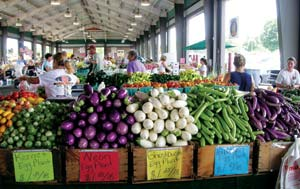
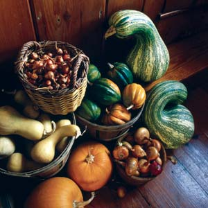
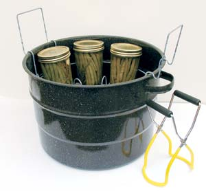
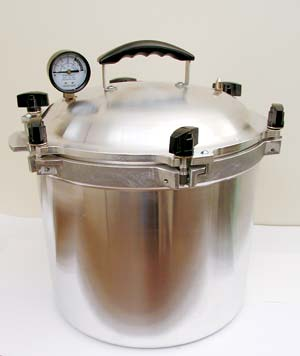
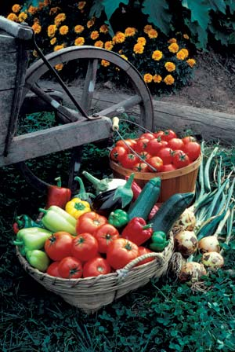
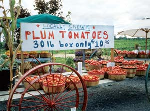
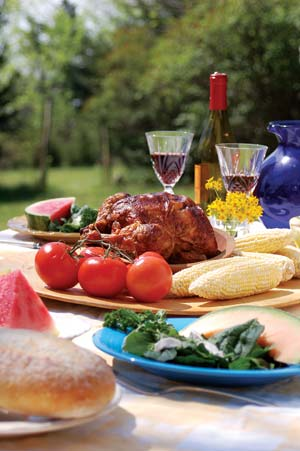
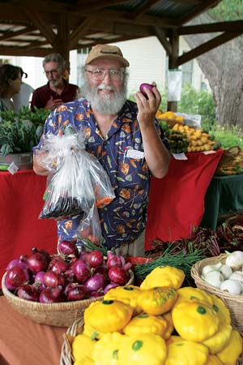

Can you name three crops that will keep easily for months in a cool closet? (Try winter squash, sweet potatoes and garlic.) Or how about vegetables that stay fresh until well after Christmas when stashed in the refrigerator, or even just a cooler in your unheated garage? (We recommend carrots, beets and potatoes.)
Buying local produce and “putting it by” (or “putting it up,” depending on your region) is a great way to support local farmers and give your family fresher, better-tasting organic food. Every bite you take - today or months from now - helps strengthen your local economy, supports more sustainable food production and brings you a step closer to a more self-sufficient life.
Plus, buying local food in bulk often can save you money on grocery bills. And as the examples above indicate, it can be as easy as going to the farmers market when your favorite fruits and veggies are in season, and learning which conditions or techniques are best for storing each crop. Whether you grow your own garden or buy produce from local growers, the following charts will help you eat more sustainably all year long.
To simplify home food storage, we’ve divided crops by preservation methods, starting with the ones that require the least time, trouble and energy. Even when canned or frozen, home-stored foods save huge amounts of energy in reduced processing, packaging, transportation and storage costs. Freezing is the most energy-intensive method of home food preservation, but you still save energy when you freeze locally grown food. Buy seasonal produce directly from growers at farmers markets or farm stands, then choose preservation methods that fit your cooking habits and time constraints, because most foods can be preserved in more than one way.
If you need more information than what’s shown in the following charts, check out these online resources:
These crops will keep for two to six months at cool room temperatures, and they require no processing, containers or refrigeration. Can things get any easier than slipping a few buttercup squash under your bed, or finding a place in your closet for sweet potatoes? The sweet flavor of these two crops actually improves under good storage conditions, so you’re not settling for less by storing your own. When bringing winter squash home from a farmers market, cradle them in towels to avoid accidental nicks or bruises.
Garlic benefits from cool conditions, but most varieties will keep at room temperature for several months. Do keep nuts out of the reach of hungry rodents, and freeze them after their protective shells have been removed. Click here for a list of good cold storage crops, their peak seasons, and handling and storage tips.
These foods will keep for two months or more under cold, moist conditions - no processing required. A root cellar is ideal, or you can bury boxes or barrels underground. (Search for “root cellar” for more.) If you live in a cold climate but don’t want to dig, you can store many of these crops in an unheated garage or outbuilding. In warm climates where the soil stays above 45 degrees in winter, a second refrigerator may be your best option. Running an extra fridge consumes energy, but not nearly as much as is needed to process, package and ship the crops you would buy otherwise. Click here for a list of foods that are good candidates for underground storage.
Pickles, acidic tomatoes and sweetened chutneys or fruit preserves have a pH level below 4.5 that retards bacterial growth, so they can be canned in a large water bath canner. A water bath canner is nothing more than a large pot with a metal tray or rack that holds glass jars at least a half inch off the bottom. They are not expensive to buy new, and used ones often can be found at thrift stores or yard sales. Canning jars will last for decades, so look for them used, too. Each time you reuse a jar, you’ll conserve all the materials and energy that would be needed to create a replacement. Jars sealed in a water bath canner need no refrigeration. (See Learn to Can for Homegrown Flavor for more on home canning.) It’s important to closely follow the recipes and instructions that come with your canning equipment to avoid food contamination. Click here for foods for water bath canning, plus their peak seasons and handling and storage tips.
You will need a pressure canner to preserve foods with a pH level above 4.5, because higher temperatures are required to kill bacteria in non-acidic foods. Still, reusable jars and no refrigeration requirements make pressure canning a good choice. In many areas, good quality canning equipment is available in community canning kitchens. (See “Communal Canning Comes of Age” for the scoop on group canning projects.)
Pressure canner gauges require care and periodic testing, but the biggest challenge with pressure canning is the heat it creates. This is why rural homes used to have a place on the porch for a canning stove, or sometimes a canning kitchen in a corner of the shed. A propane cooker can help you move pressure canning to your deck or patio, though it’s still best to prepare the food and jars in the kitchen. Click here to find foods that are good for pressure canning, as well as their peak seasons and handling and storage tips.
Freezing is often the best way to preserve the flavors and textures of delicate vegetables, and small batches can be blanched to stabilize nutrients and texture, cooled to preserve color, then packaged in 30 minutes or less. Running a freezer consumes energy, but reduced packaging is where the home food preserver comes out on top. For instance, pint-size poly freezer bags or pouches require a quarter less energy to produce than the freezer-proof boxes used for many commercial frozen veggies.
To reduce energy consumption, keep your freezer in a cool basement or garage, and fill vacant spaces with plastic bottles or freezer bags filled with water. Should the power go off, the increased thermal mass from the extra ice will slow the thawing process. Store small items inside larger snap-top plastic boxes so they won’t get lost in your freezer. Click here for foods you can freeze, their peak seasons, and handling and storage tips.
Some of the food crops listed here need brief precooking or other special preparation, but many can be washed, peeled, pared and popped into a dehydrator. You can also simply dry them in the sun or in a solar dehydrator. (See Build a Solar Food Dehydrator.)
To even out the moisture levels between different-sized pieces, place dried foods in an airtight container in the refrigerator for a few days after drying them. If the pieces soften, dry them a bit more before packing away in storage. For maximum energy savings, store dried food in reusable airtight storage containers made of glass or plastic. The drying process often intensifies flavors, and dried foods take up little space. Dried foods keep three to six months in a dark room or pantry at cool temperatures, or up to a year in the freezer. Click here to find foods that can be dehydrated, there peak seasons, and handling and storage tips.
|
 WILLIAM D. ADAMS The Raleigh Farmers Market is one of five operated by the North Carolina Department of Agriculture and Consumer Services. |
 WALTER CHANDOHA When bringing winter squash home from a farmers market, cradle them in towels to avoid accidental nicks or bruises. |
 MATTHEW T. STALLBAUMER Pickles, acidic tomatoes and sweetened chutneys or fruit preserves have a pH level below 4.5 that retards bacterial growth, so they can be canned in a large water bath canner. A water bath canner is nothing more than a large pot with a metal tray or rack that holds glass jars at least a half inch off the bottom. |
|
 MATTHEW T. STALLBAUMER You will need a pressure canner to preserve foods with a pH level above 4.5, because higher temperatures are required to kill bacteria in non-acidic foods. |
 WALTER CHANDOHA Freezing is often the best way to preserve the flavors and textures of delicate vegetables, such as peppers and eggplant. |
 WALTER CHANDOHA Tomatoes with added herbs can be canned in a water bath canner, but use a pressure canner when including zucchini, okra or other low-acid vegetables. |
|
 MATTHEW T. STALLBAUMER Preserve foods to enjoy the bounty of the harvest year-round. |
 WILLIAM D. ADAMS Preserving locally grown foods helps strengthen your local economy, supports more sustainable food production and brings you a step closer to a more self-sufficient life. |
|